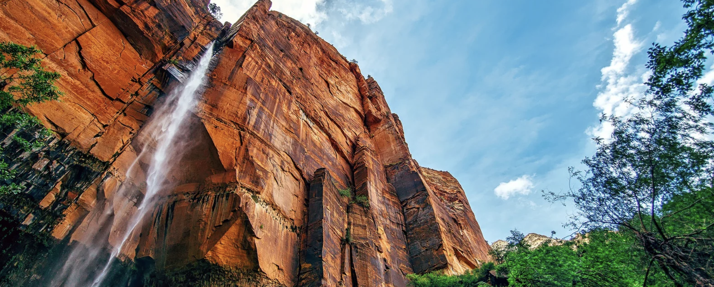
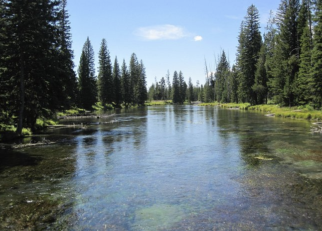
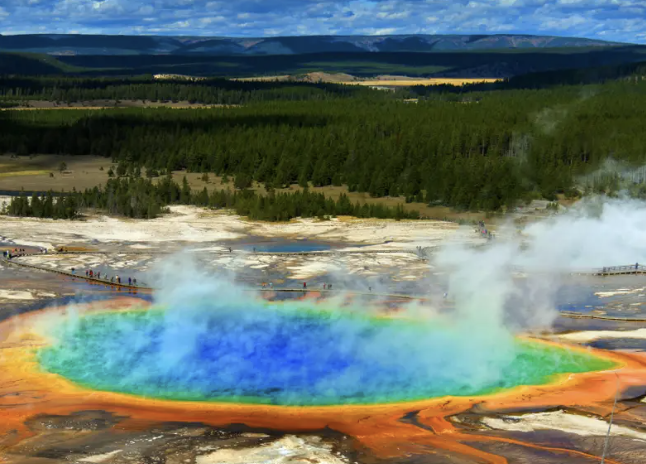
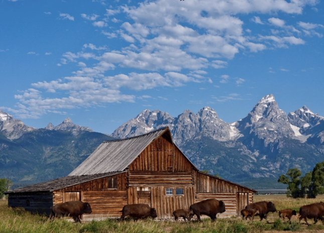
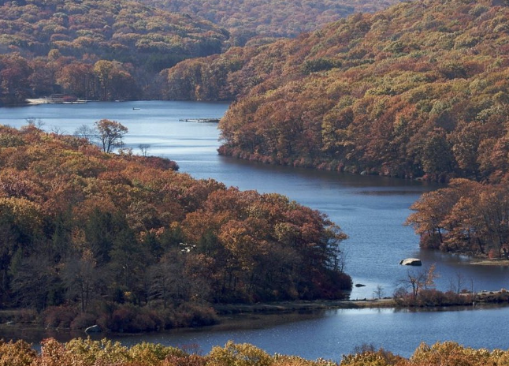

Sightseeing Adventures
"Landmark Explorer: Reviews and Discoveries"

Located about an hour's drive from Rexburg, Island Park is known for its scenic beauty and outdoor recreation opportunities. Henrys Lake and Island Park Reservoir offer fishing, boating, and other water activities.

While not directly in Rexburg, Yellowstone is within a reasonable driving distance. It's a world-renowned national park known for its geothermal features, wildlife, and stunning landscapes. Old Faithful, Mammoth Hot Springs, and the Grand Canyon of Yellowstone are some of the must-see attractions.

Another nearby gem, Grand Teton National Park is known for its iconic mountain range, pristine lakes, and abundant wildlife. Hiking, photography, and wildlife viewing are popular activities here.

This state park, situated near Island Park, provides opportunities for hiking, wildlife viewing, and horseback riding. It's known for its expansive meadows and historical sites.